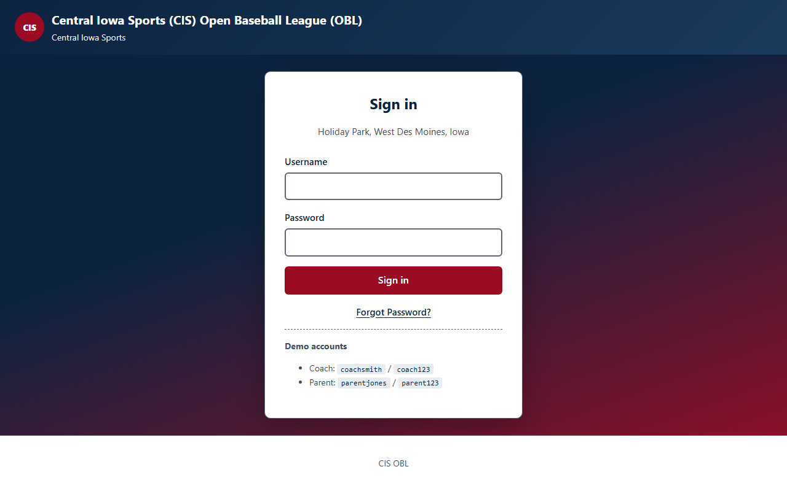
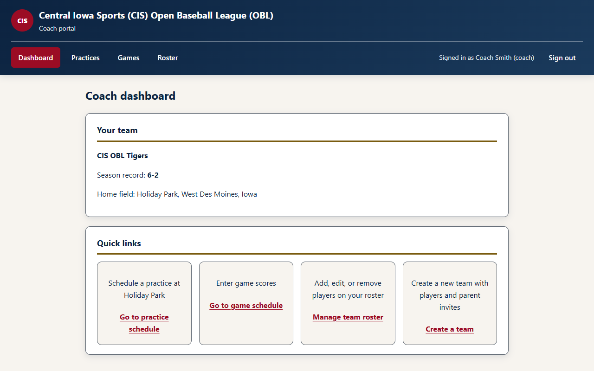
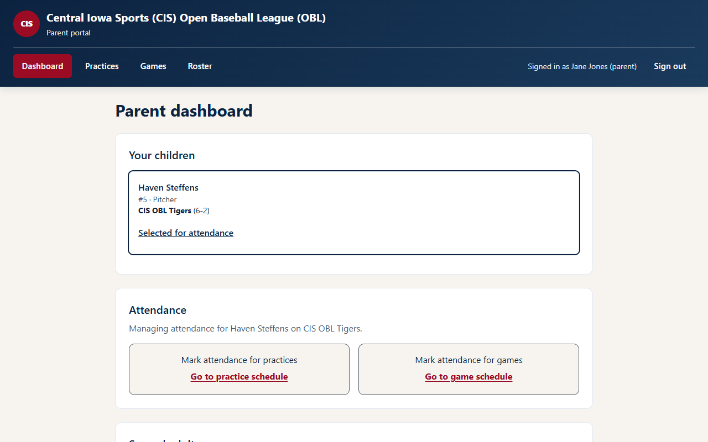

Youth Sports Team Manager
Technologies Used
- HTML
- CSS
- JavaScript
- localStorage

Overview
The Central Iowa Sports (CIS) Open Baseball League (OBL) portal is a team management application for youth baseball coaches and parents. Coaches schedule practices and games, manage rosters, and track scores. Parents view their children’s teams and mark attendance for practices and games.
The live demo includes coach and parent sign-in flows with demo accounts, plus role-based dashboards for the CIS OBL Tigers and CIS OBL Hawks.
Try the Live Demo
Explore the working application on Netlify. Sign in as a coach to schedule practices, enter game scores, and manage the roster — or sign in as a parent to view your children and mark attendance. Demo account credentials are listed on the sign-in page.
Problem
Coaches often manage team information using spreadsheets, emails, texts, and multiple disconnected tools. Parents lack a single place to see schedules, confirm attendance, or report when a player is absent or injured.
Solution
I designed a centralized league portal with separate coach and parent experiences. Coaches manage teams, rosters, and schedules from a dashboard with quick links to every workflow. Parents see their linked children and can mark attendance directly from practice and game listings.


Key Features
- Coach and parent sign-in with role-based dashboards
- Coach dashboard with team summary, practice scheduling, game scores, and roster management
- Team creation with player and parent invite workflows
- Roster management — add players with jersey number, position, and linked parent accounts
- Practice scheduling with date, time, field, location, and notes
- Game schedule with score entry for coaches
- Parent attendance marking for practices and games (attending, absent, or injured)
- Parent dashboard for viewing children, attendance shortcuts, and second-adult management
- Forgot-password flow and accessible live regions for status updates
Coach and Parent Experiences
-
Coach portal
Schedule practices at Holiday Park, enter game scores, manage the team roster, and create new teams with parent invites.
-
Parent portal
View linked children, mark practice and game attendance, and add second adults for notifications or shared account access.
-
Shared navigation
Dashboard, Practices, Games, and Roster pages adapt to the signed-in role while keeping a consistent league header and sign-out action.
-
Demo teams
CIS OBL Tigers and CIS OBL Hawks with sample players, practices, and attendance records seeded for exploration.
Accessibility Approach
The portal includes skip links, semantic landmarks, labeled forms, and dedicated
aria-live status and alert regions. Attendance buttons use
aria-pressed for state, roster tables include captions and column headers, and
interactive controls target at least 44px touch height on parent-facing screens.
What I Learned
- Designing distinct coach and parent workflows within one application
- Dashboard information architecture with quick-link tiles
- Scheduling and attendance interaction patterns for volunteer-run leagues
- Accessible form design and live status feedback for data-entry tasks
Future Enhancements
- Push notifications for schedule changes and announcements
- Team photo galleries and season highlights
- Integration with league registration systems
- Mobile app for on-the-field updates